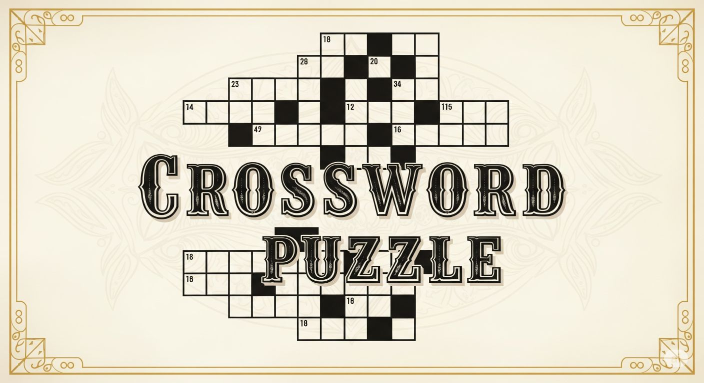

가로세로 낱말 퀴즈
오늘의 퍼즐
더 풀어보기
11회 - 세계지리(7x7)
10회 - 대중문화(7x7)
9회 - 인물/캐릭터 (7x7)
8회 - 세계지리 (7x7)
7회 - 대중문화 (7x7)
6회 - 위인/인물 (7x7)
5회 - K-pop (99년 이후)
4회 - 외국영화 (7x7)
3회 - 세계지리 (7x7)
2회 - 한국 영화 (7x7)
1회 - 90년대 가요(7x7)